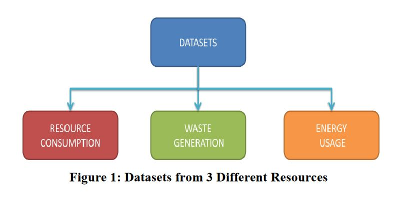
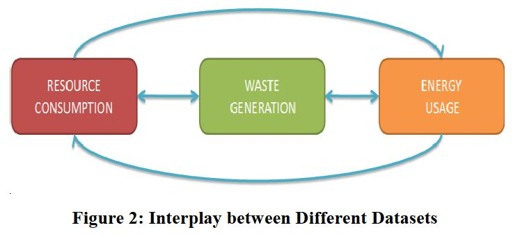
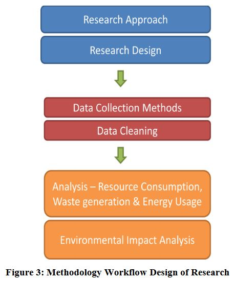
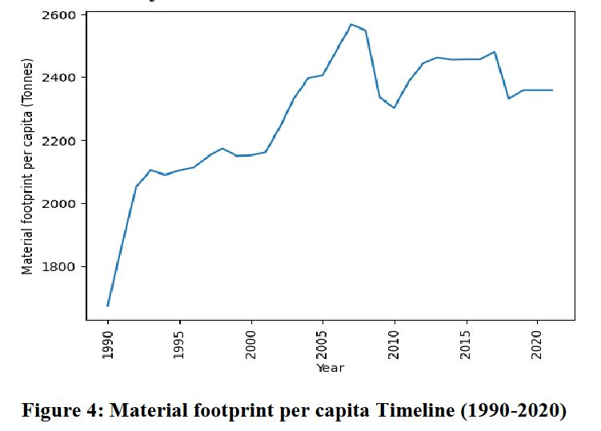
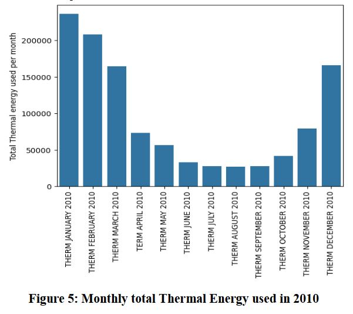
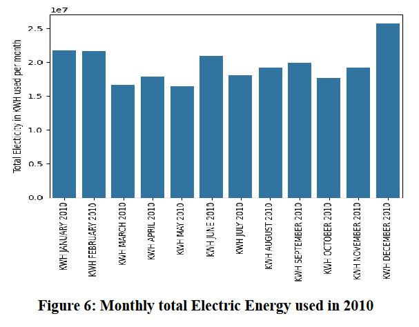
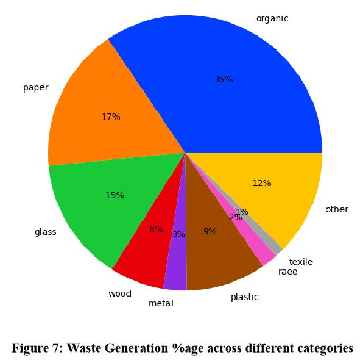
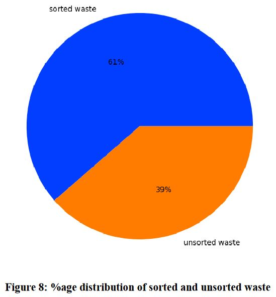
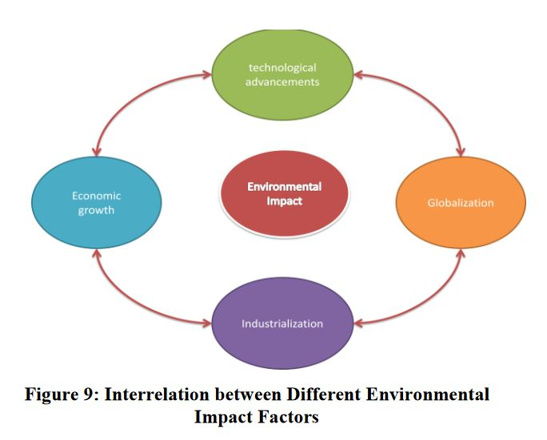
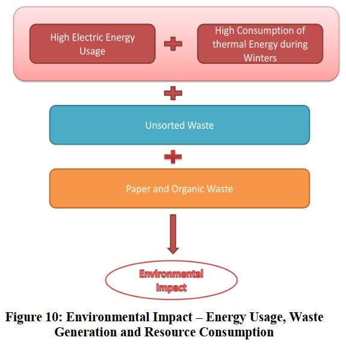

Environmental Footprint of Businesses
Abstract
This research paper investigates the environmental impact of businesses through the analysis of waste generation, resource consumption, and energy usage. The research utilizes a hybrid methodology, integrating both quantitative scrutiny and qualitative exploration to comprehensively assess businesses' contributions to environmental degradation. Data on waste generation, resource consumption, and energy usage are collected from various sources, including Kaggle and the Chicago Data Portal, and undergo rigorous data cleaning procedures to ensure accuracy and relevance. Quantitative analysis involves statistical techniques and visualization methods to detect trends and patterns within the data, while qualitative investigation explores the implications of these findings for environmental sustainability. The results highlight the significant role of businesses in material consumption, waste generation, and energy consumption, emphasizing the urgent need for sustainable practices. The research ends by examining the consequences of the discoveries and suggesting potential actions for promoting environmental stewardship in business operations. Overall, this research contributes to a deeper understanding of businesses' environmental impact and informs strategies for fostering sustainability in corporate practices. Keywords—Sustainability, Business Impact, Environmental Footprint, Waste Generation, Resource Consumption, Energy Usage, Data Analysis, Data Cleaning, Material Footprint, Renewable Energy, Sustainable Practices, Environmental Management, Climate Change, Greenhouse Gas Emissions, Resource Efficiency.
INTRODUCTION
Businesses play a pivotal role in shaping the environment through their activities, influencing factors such as waste generation, resource consumption, and energy usage. As concerns about environmental sustainability continue to grow, understanding the impact of businesses on the environment has become increasingly important. This research aims to comprehensively examine the environmental footprint of businesses by analyzing data related to waste generation, resource consumption, and energy usage. The study focuses on three key datasets obtained from various sources: waste generation data from Kaggle's Municipal Waste Generation dataset, resource consumption data from Kaggle's Material Footprint per Capita dataset spanning from 1990 to 2021, and energy usage data from the Chicago Data Portal. These datasets provide valuable insights into the magnitude and nature of businesses' environmental impact, offering a comprehensive view of their contributions to environmental degradation.
To guarantee the trustworthiness and accuracy of the analysis, rigorous data cleaning procedures are conducted to remove irrelevant features and handle missing values. Subsequently, quantitative analysis techniques, including Statistical methodologies and data visualization techniques are utilized to pinpoint trends and patterns in the data [1]. Additionally, qualitative investigation is conducted to explore the implications of these findings for environmental sustainability and business practices.
By examining the interplay between waste generation, resource consumption, and energy usage in business operations, this research aims to provide actionable insights for promoting environmental stewardship and sustainability in corporate practices. Ultimately, the results of this research enhance comprehension at a deeper level of businesses environmental impact and inform strategies for mitigating environmental degradation in the pursuit of a more sustainable future.
LITERATURE SURVEY
Businesses have a substantial impact on resource consumption, energy usage, and waste generation. As concerns about sustainability rise, businesses are increasingly looking for ways to reduce their environmental impact [2]. Machine learning (ML) has emerged as an effective tool for achieving this aim, providing data-driven insights and automated procedures that can increase productivity and lower environmental footprints [3]. Here's a summary of the literature addressing how ML is influencing firms in waste management, resource use, and energy consumption.
A. Related work
Businesses face increasing pressure to reduce their environmental effect. Excessive waste generation, resource consumption, and energy consumption hurt the environment while also straining finances and impeding competitiveness. Fortunately, machine learning (ML) has emerged as a strong tool, enabling organizations to navigate towards a more sustainable future [4]. Businesses face a vital crossroads: limit their environmental impact or face rising pressure from consumers, regulators, and the earth itself. Fortunately, machine learning (ML) emerges as a knight in shining armor, offering data-driven solutions to combat waste generation, resource consumption, and energy usage [5]. ML is transforming businesses for a sustainable future.
B. Machine learning for waste management: A review. Neurocomputing
ML algorithms can forecast waste generation based on operational data such as sales figures, production schedules, and seasonal patterns [6]. This allows firms to optimize sourcing, logistics, and production planning while reducing unnecessary waste. By examining customer behavior and market trends, ML may predict demand for products and services. This allows businesses to optimize production volumes, preventing overproduction and consequent waste generation [7].
C. Waste prediction using machine learning for smart waste management in smart cities.
ML algorithms can assess energy consumption patterns and forecast future energy requirements. This allows businesses to deploy smart energy management systems, such as dynamic pricing, demand response tactics, and automated energy-saving measures, which result in significant energy savings [8]. Utilizing machine learning can aid in optimizing the incorporation of renewable energy sources such as solar and wind into power systems. This increases renewable energy use while decreasing reliance on fossil fuels and greenhouse gas emissions. ML can forecast equipment breakdowns based on sensor data, allowing for preventative maintenance programs [9]. This lowers downtime, saves energy owing to inefficient processes, and increases equipment longevity.
D. Deep learning for smart waste sorting: A review. Waste Management
Machine learning-powered image recognition and sensor based systems can accurately categorize and sort various types of waste [10]. This facilitates efficient recycling and waste disposal, reducing landfill contributions and promoting circular economy practices. By avoiding waste, improving resource utilization, and lowering energy consumption, machine learning can drastically lower operating costs for enterprises [11]. Overall, the literature review provided a comprehensive literature review to establish the theoretical foundation and contextualize the project within existing knowledge.
METHODOLOGY
In this section, we outline the methodology employed to investigate Environmental Impact of Businesses for making Businesses more sustainable. The methodology encompasses the research strategy, structure, data collection methods, data analysis methods, and ethical considerations:
A. Research Approach
The research approach will involve a hybrid approach, merging quantitative analysis with qualitative methods investigation to comprehensively assess the environmental impact of businesses [12]. Quantitative analysis will entail statistical methods and data visualization techniques applied to datasets on waste generation, resource consumption, and energy usage. This quantitative aspect will provide insights into trends, patterns, and correlations within the data [13]. Additionally, qualitative investigation will involve in-depth examination of the implications of these findings for environmental sustainability, considering factors such as waste management practices, resource efficiency, and energy consumption behaviors [14]. By combining quantitative and qualitative methods, the study seeks to provide a comprehensive understanding of the environmental impact of businesses and potential avenues for promoting sustainable practices [15].
B. Research Design
This research aims to analyze the environmental impact of businesses by examining waste generation, resource consumption, and energy usage data. Data will be collected from Kaggle and the Chicago Data Portal, covering waste generation, material footprint per capita, and energy consumption. After data collection, a thorough data cleaning process will be conducted to ensure data accuracy and relevance [16]. Analysis methods will include visualizations, statistical analysis, and environmental impact assessments. The results will be summarized, drawing conclusions about businesses' environmental impact and proposing future research directions for promoting sustainability [17].
C. Data Collection Methods
Businesses have a significant impact on the environment, which can be thoroughly examined through the analysis of waste generation, resource consumption, and energy usage. Each of these factors plays an essential role in understanding the environmental footprint of businesses and assessing their sustainability practices [18]. Hence, we obtained data on Municipal Waste Generation from Kaggle, encompassing various types of waste originating from households, commercial enterprises, Office structures, establishments, small enterprises, yard and garden refuse, street sweeping residue, litter bin contents, and market cleaning refuse are categorized as household waste [19]. Notably, Waste originating from municipal sewage networks and treatment facilities, alongside debris generated from construction and demolition endeavors, are excluded from this definition. The measurement unit for this indicator includes thousand tonnes and kilograms per capita. Subsequently, we accessed data on Resource Consumption in the form of Material Footprint per capita (in tonnes) spanning the years 1990 to 2021 from Kaggle. This dataset offers a comprehensive historical overview of per capita material footprint, facilitating an analysis of global resource consumption patterns [20]. It includes crucial columns including ISO3 (country/territory ISO3 code), Country (name of the country or territory), Continent (geographic region), Hemisphere (hemisphere where the country is located), together with Material Footprint data for the years from 1990 to 2021. These records serve as a valuable asset for investigating shifts in resource consumption and their environmental ramifications over time, thereby enhancing our comprehension of global sustainability and resource utilization trends. Finally, we acquired a dataset on Energy Usage from the Chicago Data Portal, which presents various measures of energy consumption for residences, businesses, and industries within the city during the year 2010 [21]. The data, derived from ComEd and Peoples Natural Gas and aggregated by Accenture, encompasses 88 percent of the buildings in Chicago for 2010, with electricity accounting for 68 percent of total electrical usage and gas representing 81 percent of gas consumption within the city for the same year. Census blocks with fewer than four accounts are aggregated at the Community Area level without additional geographical identifiers [13]. Additionally, this dataset includes specific variables delineating characteristics of the Census block population, physical housing, and occupancy.
D. Data Cleaning
Data cleaning is a crucial preliminary step before conducting analysis on datasets as it helps remove irrelevant features and handle missing values. We conducted data cleaning for three datasets: Waste Generation, Resource Consumption, and Energy Usage, to ensure they are ready for analysis. For the Energy Usage Dataset, we first filtered the data based on the "Building Type" attribute, focusing only on "Commercial" and "Industrial" buildings. We then selected relevant features related to electricity consumption, thermal consumption, renter information, and occupied units [22]. To address missing values, we replaced them with 0, ensuring completeness and consistency in the dataset. In the Resource Consumption dataset, we targeted the "Material Footprint per Capita" attribute. Irrelevant features such as "ISO3" and "Country" were discarded, leaving only the feature related to material footprint per capita in tonnes from 1990 to 2021. This streamlined the dataset for analysis, resulting in 32 relevant features out of 39. Lastly, for the Waste Generation dataset, which contained 35 features, we eliminated all categorical attributes as they were not relevant for our analysis focused on determining the amount of waste generated [23]. After removing unnecessary features, we addressed missing values in the remaining columns by replacing NaN values with their respective mean values, ensuring data completeness and accuracy. Overall, the data cleaning process facilitated the preparation of clean, concise, and relevant datasets for subsequent analysis [24]. By removing irrelevant features and handling missing values appropriately, the datasets are now ready for in-depth analysis to glean insights into environmental impact and business activities.
E. Analysis - Resource Utilization, Waste Production & Energy Consumption
A comprehensive analysis of three key datasets— Resource Consumption, Waste Production, and Energy Consumption—provides valuable insights into their individual contributions to environmental impact through various business activities for enhancing business sustainability. By comprehensively analyzing these three key datasets, businesses can gain valuable insights into their environmental impact across various activities. This data- driven approach enables informed decision-making aimed at enhancing business sustainability, aligning with environmental regulations, meeting stakeholder expectations, and ultimately contributing to a more sustainable future [25]. Moreover, transparency in reporting and addressing environmental performance can also enhance brand reputation and competitiveness in increasingly environmentally conscious markets.
In examining Resource Consumption, visualizing Material Footprint per capita in tonnes from 1990 to 2021 reveals distinct trends. There is a notable surge in resource consumption post-2000, followed by a period of relative stability from 2010 to 2020. This suggests a significant escalation in resource utilization, likely propelled by factors such as economic growth, industrialization, and globalization. the observed trends in Material Footprint per capita highlight the complex interplay between economic development, industrialization, and environmental sustainability.
Turning to Energy Usage, a nuanced analysis reveals insights into electricity and thermal energy consumption patterns [26]. Industries demonstrate peak electricity usage in December, signaling heightened energy demand during year- end operations, possibly driven by increased production or seasonal factors. Similarly, patterns emerge in thermal energy consumption, with notable spikes during colder months (January, February, March, November, and December) and lower usage in warmer months (June, July, August, and September). These patterns align with seasonal variations in heating and cooling demands, reflecting both business activities and climate conditions.
In Waste Generation analysis, attention is drawn to the composition of waste materials and waste sorting practices. Organic waste emerges as the primary component, comprising 35% of total waste generated, followed by paper. This underscores the predominance of biodegradable materials in business waste streams, posing challenges for effective waste management and environmental sustainability. Knowing of these insights will play crucial role in making a business a more sustainable business understanding these insights is vital for businesses aiming to enhance their sustainability practices.
Moreover, a pie chart analysis reveals that 61% of waste is sorted, while 39% remains unsorted, emphasizing the importance of waste segregation and recycling efforts to minimize environmental impact and enhance resource efficiency.
In summary, the analysis highlights the intricate interplay between resource consumption, waste generation, and energy usage in business operations. It underscores the imperative for sustainable practices, Effective management of resources and the incorporation of renewable energy sources to reduce environmental impact and promote long-term sustainability in business activities. This comprehensive understanding is essential for guiding strategic decisions and fostering environmentally responsible business practices.
F. Environmental Impact Analysis
The combination of economic growth, industrialization, globalization, technological advancements, changing consumer behaviors, and resource exploitation during the 2000s contributed to a significant increase in material footprints globally. It can clearly seen from our deductions from Resource Consumption [27]. Moreover, the rise in material footprints indicates a growing consumption of manufactured goods by individuals, businesses, and other organizations, accelerating notably since 2000. This includes everything from household items and electronics to infrastructure and transportation. The analysis reveals that organic waste comprises the highest percentage (35%) of the total waste generated by businesses, followed by paper with 17%. The high percentages of organic and paper waste generated by businesses contribute to various environmental challenges, such as climate variation, pollution, depletion of resources, and the destruction of habitats. A 39% unsorted waste rate may not necessarily be alarming; it does warrant attention from a sustainability and efficiency perspective. Businesses should consider implementing measures to improve waste segregation, increase recycling rates, and minimize the generation of hazardous waste to enhance environmental performance and resource efficiency. The data indicates from Energy Usage data indicates significantly higher thermal energy usage during colder months, such as January, February, and December. While this is expected due to increased heating demands during colder weather, it also suggests that businesses may be relying heavily on non-renewable energy sources for heating purposes, which can lead to higher emissions of greenhouse gases and air pollutants. Also the data indicates substantial electricity usage by businesses throughout the year, with varying levels from month to month. High electricity consumption can lead to increased demand for energy generation, which often relies on Fossil fuels like coal, natural gas, or nuclear energy, which are non-renewable.
RESULTS
The combination of economic growth, industrialization, globalization, and technological advancements since the 2000s has led to a surge in material consumption and waste generation globally. In essence, the confluence of economic growth, industrialization, globalization, and technological advancements has ushered in an era of unprecedented material consumption and waste generation. However, the accompanying environmental risks and challenges necessitate a paradigm shift in how we approach resource management, waste reduction, and energy consumption. By prioritizing sustainable practices, investing in renewable energy infrastructure, and fostering collaboration between stakeholders, we can strive towards a future that is more sustainable and resilient, ensuring the well-being of future generations.
Key findings include the dominance of organic and paper waste in the business waste stream, posing environmental risks, examples include climate change, pollution, and the depletion of resources. Additionally, a 39% unsorted waste rate underscores the need for improved waste management practices. Moreover, businesses exhibit substantial energy consumption patterns, particularly in thermal and electricity usage, with reliance on non-renewable sources contributing to greenhouse gas emissions and air pollution. This emphasizes the urgency of transitioning to renewable energy sources and improving energy efficiency.
Overall, addressing these environmental challenges requires businesses to adopt sustainable practices, enhance waste management strategies, and prioritize resource efficiency and conservation. It is crucial for businesses, policymakers, and society to collaborate in order to advance sustainability efforts and effectively mitigate environmental impacts.
CONCLUSION
In Conclusion, the data underscores the significant environmental challenges faced by businesses, including high material consumption, waste generation, and energy consumption. The dominance of organic and paper waste in the waste stream, along with a considerable unsorted waste rate, highlights the urgent need for improved waste management practices. Businesses must prioritize waste segregation, recycling, and hazardous waste reduction to enhance resource efficiency and mitigate environmental impacts. Moreover, the reliance on non-renewable energy sources for heating and electricity generation contributes to greenhouse gas emissions and air pollution. To address this, businesses should accelerate the shifting towards renewable energy sources and prioritize energy efficiency measures. Overall, collaborative action between businesses, policymakers, and society is crucial to address these environmental challenges effectively. By adopting sustainable practices, transitioning to renewable energy, improving energy efficiency, and collaborating with stakeholders, Enterprises hold significant potential in fostering environmental stewardship and advocating for a more sustainable future.
FUTURE SCOPE
The future scope of addressing environmental challenges in business presents a myriad of opportunities for innovation, collaboration, and positive impact. Key areas of focus include advancing waste management technologies, embracing circular economy principles, integrating renewable energy sources, innovating energy-efficient solutions, optimizing supply chain management, leveraging data-driven insights, and fostering corporate social responsibility initiatives. By investing in these areas, businesses can drive sustainable practices, reduce environmental impact, enhance resource efficiency, and strengthen brand reputation. Collaboration with stakeholders, including governments, NGOs, suppliers, and consumers, is essential to driving systemic change and achieving meaningful progress towards a more sustainable future. Overall, the future holds immense potential for businesses to lead the way in environmental sustainability, contributing to a healthier planet and a more resilient global economy.
ACKNOWLEDGMENT
We extend our sincere gratitude to our supervisor; I extend my deepest gratitude to Hatesh Shyan for her invaluable guidance, expertise, and unwavering support throughout the duration of this research. Her insightful feedback and valuable suggestions have significantly enhanced the quality of this paper. We would like to express our gratitude to our colleague, Aditya Singh, and Ranjeet Kumar for their collaboration and contributions to this research endeavor. His dedication, diligence, and collaborative spirit have enriched the discussions and analysis, leading to the development of a more comprehensive and insightful study. Furthermore, we would like to thank all individuals and organizations whose datasets, resources, and assistance facilitated the conduct of this research, enabling us to explore the complex dynamics of waste generation, resource consumption, and energy usage in business operations. Our heartfelt thanks go out to everyone who has supported us in this endeavor, directly or indirectly, and Their contributions have been invaluable in shaping the outcome of this research paper.